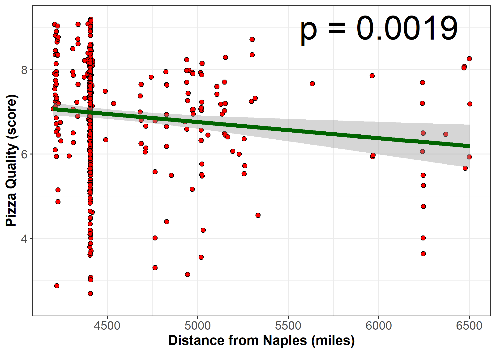

This analysis was performed as part of an exercise for my Modern Applied Data Analysis course.
When I taught the course in fall 2019, one of the weekly assignments for the students was to participate in TidyTuesday. I did the exercise as well, this is my product. You can get the R Markdown file to re-run the analysis here.
Loading packages
library('readr')
library('ggplot2')
library("dplyr")
library("cowplot")
library("plotly")
library("forcats")
library("geosphere")
Data loading
Load date following TidyTueday instructions.
pizza_jared <- readr::read_csv("https://raw.githubusercontent.com/rfordatascience/tidytuesday/master/data/2019/2019-10-01/pizza_jared.csv")
pizza_barstool <- readr::read_csv("https://raw.githubusercontent.com/rfordatascience/tidytuesday/master/data/2019/2019-10-01/pizza_barstool.csv")
pizza_datafiniti <- readr::read_csv("https://raw.githubusercontent.com/rfordatascience/tidytuesday/master/data/2019/2019-10-01/pizza_datafiniti.csv")
Analysis Ideas
See the TidyTuesday website for a codebook. These are 3 datasets. Looks like the 1st dataset is ratings of pizza places through some (online?) survey/poll, the 2nd dataset again has ratings of pizza places from various sources, and the 3rd dataset seems to have fairly overlapping information to the 2nd dataset.
Note: When I looked at the website, the codebook for the 3rd dataset seemed mislabeled. Might be fixed by now.
Possibly interesting questions I can think of:
- For a given pizza restaurant, how do the different ratings/scores agree or differ?
- Are more expensive restaurants overall rated higher?
- Is there some systematic dependence of rating on location? Do restaurants located in a certain area in general get rated higher/lower compared to others?
I think those are good enough questions to figure out, let’s see how far we get.
Initial data exploration
Start with a quick renaming and general check.
#saves typing
d1 <- pizza_jared
d2 <- pizza_barstool
d3 <- pizza_datafiniti
glimpse(d1)
## Rows: 375
## Columns: 9
## $ polla_qid <dbl> 2, 2, 2, 2, 2, 3, 3, 3, 3, 3, 4, 4, 4, 4, 4, 5, 5, 5, 5...
## $ answer <chr> "Excellent", "Good", "Average", "Poor", "Never Again", ...
## $ votes <dbl> 0, 6, 4, 1, 2, 1, 1, 3, 1, 1, 4, 2, 1, 1, 0, 1, 1, 0, 3...
## $ pollq_id <dbl> 2, 2, 2, 2, 2, 3, 3, 3, 3, 3, 4, 4, 4, 4, 4, 5, 5, 5, 5...
## $ question <chr> "How was Pizza Mercato?", "How was Pizza Mercato?", "Ho...
## $ place <chr> "Pizza Mercato", "Pizza Mercato", "Pizza Mercato", "Piz...
## $ time <dbl> 1344361527, 1344361527, 1344361527, 1344361527, 1344361...
## $ total_votes <dbl> 13, 13, 13, 13, 13, 7, 7, 7, 7, 7, 8, 8, 8, 8, 8, 5, 5,...
## $ percent <dbl> 0.0000, 0.4615, 0.3077, 0.0769, 0.1538, 0.1429, 0.1429,...
glimpse(d2)
## Rows: 463
## Columns: 22
## $ name <chr> "Pugsley's Pizza", "Williamsbu...
## $ address1 <chr> "590 E 191st St", "265 Union A...
## $ city <chr> "Bronx", "Brooklyn", "New York...
## $ zip <dbl> 10458, 11211, 10017, 10036, 10...
## $ country <chr> "US", "US", "US", "US", "US", ...
## $ latitude <dbl> 40.85877, 40.70808, 40.75370, ...
## $ longitude <dbl> -73.88484, -73.95090, -73.9741...
## $ price_level <dbl> 1, 1, 1, 2, 2, 1, 1, 1, 2, 2, ...
## $ provider_rating <dbl> 4.5, 3.0, 4.0, 4.0, 3.0, 3.5, ...
## $ provider_review_count <dbl> 121, 281, 118, 1055, 143, 28, ...
## $ review_stats_all_average_score <dbl> 8.011111, 7.774074, 5.666667, ...
## $ review_stats_all_count <dbl> 27, 27, 9, 2, 1, 4, 5, 17, 14,...
## $ review_stats_all_total_score <dbl> 216.3, 209.9, 51.0, 11.2, 7.1,...
## $ review_stats_community_average_score <dbl> 7.992000, 7.742308, 5.762500, ...
## $ review_stats_community_count <dbl> 25, 26, 8, 0, 0, 3, 4, 16, 13,...
## $ review_stats_community_total_score <dbl> 199.8, 201.3, 46.1, 0.0, 0.0, ...
## $ review_stats_critic_average_score <dbl> 8.8, 0.0, 0.0, 4.3, 0.0, 0.0, ...
## $ review_stats_critic_count <dbl> 1, 0, 0, 1, 0, 0, 0, 0, 0, 1, ...
## $ review_stats_critic_total_score <dbl> 8.8, 0.0, 0.0, 4.3, 0.0, 0.0, ...
## $ review_stats_dave_average_score <dbl> 7.7, 8.6, 4.9, 6.9, 7.1, 3.2, ...
## $ review_stats_dave_count <dbl> 1, 1, 1, 1, 1, 1, 1, 1, 1, 1, ...
## $ review_stats_dave_total_score <dbl> 7.7, 8.6, 4.9, 6.9, 7.1, 3.2, ...
glimpse(d3)
## Rows: 10,000
## Columns: 10
## $ name <chr> "Shotgun Dans Pizza", "Sauce Pizza Wine", "Mios Piz...
## $ address <chr> "4203 E Kiehl Ave", "25 E Camelback Rd", "3703 Paxt...
## $ city <chr> "Sherwood", "Phoenix", "Cincinnati", "Madison Heigh...
## $ country <chr> "US", "US", "US", "US", "US", "US", "US", "US", "US...
## $ province <chr> "AR", "AZ", "OH", "MI", "MD", "MD", "CA", "CA", "FL...
## $ latitude <dbl> 34.83230, 33.50927, 39.14488, 42.51667, 39.28663, 3...
## $ longitude <dbl> -92.18380, -112.07304, -84.43269, -83.10663, -76.56...
## $ categories <chr> "Pizza,Restaurant,American restaurants,Pizza Place,...
## $ price_range_min <dbl> 0, 0, 0, 25, 0, 0, 0, 0, 0, 0, 25, 25, 25, 25, 0, 0...
## $ price_range_max <dbl> 25, 25, 25, 40, 25, 25, 25, 25, 25, 25, 40, 40, 40,...
The first question I have is if the pizza places in the 3 datasets are the same or at least if there is decent overlap. If not, then one can’t combine the data.
d1names = unique(d1$place)
d2names = unique(d2$name)
d3names = unique(d3$name)
sum(d1names %in% d2names) #check how many restaurants in d1 are also in d2. Note that this assumes exact spelling.
## [1] 22
sum(d1names %in% d3names) #check how many restaurants in d1 are also in d2. Note that this assumes exact spelling.
## [1] 9
sum(d2names %in% d3names)
## [1] 66
22 restaurants out of 56 in dataset 1 are also in dataset 2. Only 9 overlap between dataset 1 and 3. 66 are shared between datasets 2 and 3.
The last dataset has no ratings, and if I look at the overlap of dataset 1 and 2, I only get a few observations. So I think for now I’ll focus on dataset 2 and see if I can address the 3 questions I posed above with just that dataset. Maybe I’ll have ideas for the other 2 datasets as I go along (would be a shame to not use them.)
Ratings agreement analysis
Ok, I’ll focus on dataset 2 now and look closer at the scores/rating. From the codebook, it’s not quite clear to me what the different scores and counts in dataset 2 actually mean, so let’s look closer to try and figure that out.
From the glimpse function above, I can’t see much of a difference between average and total score. Let’s look at that. Here are a few plots comparing the different score-related variables.
plot(d2$review_stats_community_total_score,d2$review_stats_community_average_score)

plot(d2$review_stats_community_total_score - d2$review_stats_community_average_score* d2$review_stats_community_count)

plot(d2$review_stats_critic_total_score-d2$review_stats_critic_average_score)

plot(d2$review_stats_dave_total_score-d2$review_stats_dave_average_score)

plot(d2$review_stats_all_total_score- (d2$review_stats_community_total_score+d2$review_stats_critic_total_score+d2$review_stats_dave_total_score))

Ok, so based on the plots above, and a few other things I tried, it seems that average score is total score divided by number of counts, and the all score is just the sum of dave, critic and community.
So to address my first question, I’ll look at correlations between average scores for the 3 types of reviewers, namely dave, critic and community.
However, while playing around with the data in the last section, I noticed a problem. Look at the counts for say critics and the average score.
table(d2$review_stats_critic_count)
##
## 0 1 5
## 401 61 1
table(d2$review_stats_critic_average_score)
##
## 0 4 4.3 4.5 4.8 5 5.1 5.4 5.5 5.7 5.8 5.9 5.96 6 6.2 6.31
## 401 1 1 1 1 3 1 1 1 1 1 1 1 1 1 1
## 6.5 6.6 6.7 6.76 6.8 6.9 7 7.2 7.3 7.4 7.6 7.76 7.8 7.9 8 8.1
## 3 1 1 1 2 1 5 2 2 1 1 1 2 1 4 2
## 8.5 8.7 8.8 9 9.3 9.4 9.8 10 11
## 3 1 1 1 1 2 1 4 1
A lot of restaurants did not get reviewed by critics, and the score is coded as 0. That’s a problem since if we take averages and such, it will mess up things. This should really be counted as NA. So let’s create new average scores such that any restaurant with no visits/reviews gets an NA as score.
d2 <- d2 %>% mutate( comm_score = ifelse(review_stats_community_count == 0 ,NA,review_stats_community_average_score)) %>%
mutate( crit_score = ifelse(review_stats_critic_count == 0 ,NA,review_stats_critic_average_score)) %>%
mutate( dave_score = ifelse(review_stats_dave_count == 0 ,NA,review_stats_dave_average_score))
Now let’s plot the 3.
p1 <- d2 %>% ggplot(aes(x=comm_score, y = crit_score)) + geom_point() + geom_smooth(method = "lm")
p2 <- d2 %>% ggplot(aes(x=comm_score, y = dave_score)) + geom_point() + geom_smooth(method = "lm")
p3 <- d2 %>% ggplot(aes(x=crit_score, y = dave_score)) + geom_point() + geom_smooth(method = "lm")
cowplot::plot_grid(p1, p2, p3, labels = c('A', 'B','C'), label_size = 12)
## `geom_smooth()` using formula 'y ~ x'
## `geom_smooth()` using formula 'y ~ x'
## `geom_smooth()` using formula 'y ~ x'

Looks like there is some agreement between Dave, the critics and the community on the ratings of various pizza places, though there is a good bit of variation.
I think it would be fun to be able to click on specific points to see for a given score which restaurant that is. For instance I’m curious which restaurant has a close to zero score from both the community and Dave (bottom left of plot B).
I think that can be done with plotly, let’s google it.
Ok, figured it out. This re-creates the 3 scatterplots from above and when one moves over the dots, it shows restaurant name.
plot_ly(d2, x = ~comm_score, y = ~crit_score, text = ~paste('Restaurant: ', name))
## No trace type specified:
## Based on info supplied, a 'scatter' trace seems appropriate.
## Read more about this trace type -> https://plot.ly/r/reference/#scatter
## No scatter mode specifed:
## Setting the mode to markers
## Read more about this attribute -> https://plot.ly/r/reference/#scatter-mode
plot_ly(d2, x = ~comm_score, y = ~dave_score, text = ~paste('Restaurant: ', name))
## No trace type specified:
## Based on info supplied, a 'scatter' trace seems appropriate.
## Read more about this trace type -> https://plot.ly/r/reference/#scatter
## No scatter mode specifed:
## Setting the mode to markers
## Read more about this attribute -> https://plot.ly/r/reference/#scatter-mode
plot_ly(d2, x = ~crit_score, y = ~dave_score, text = ~paste('Restaurant: ', name))
## No trace type specified:
## Based on info supplied, a 'scatter' trace seems appropriate.
## Read more about this trace type -> https://plot.ly/r/reference/#scatter
## No scatter mode specifed:
## Setting the mode to markers
## Read more about this attribute -> https://plot.ly/r/reference/#scatter-mode
So apparently the lousy restaurant that got a 1 from the community and almost 0 from Dave is called Amtrak. I’m wondering if that refers to pizza on Amtrak trains? Just for the heck of it and because I’m curious, let’s look at that entry.
d2 %>% filter(name == "Amtrak") %>% knitr::kable()
| Amtrak |
234 W 31st St |
New York |
10001 |
US |
40.74965 |
-73.9934 |
0 |
3 |
345 |
0.54 |
2 |
1.08 |
1 |
1 |
1 |
0 |
0 |
0 |
0.08 |
1 |
0.08 |
1 |
NA |
0.08 |
I googled the address, and it seems to be indeed Amtrak. Note to self: Never order pizza on an Amtrak train.
Price vs ratings analysis
Next, let’s look at possible impact of restaurant price level on rating.
table(d2$price_level)
##
## 0 1 2 3
## 21 216 218 8
There isn’t much spread, most pizza places are in the middle. Maybe not too surprising. Let’s look at a few plots to see if there is a pattern. First, we should recode price level as a factor.
d2 <- d2 %>% mutate(price = as.factor(price_level))
p1 <- d2 %>% ggplot(aes(x=price, y=comm_score)) + geom_violin() + geom_point()
p2 <- d2 %>% ggplot(aes(x=price, y=crit_score)) + geom_violin() + geom_point()
p3 <- d2 %>% ggplot(aes(x=price, y=dave_score)) + geom_violin() + geom_point()
cowplot::plot_grid(p1, p2, p3, labels = c('A', 'B','C'), label_size = 12)

Hard to tell if there’s a trend. Could do some stats to look in more detail, but since this exercise focuses on exploring, I won’t do that. Instead I’ll leave it at that.
Rating versus location
Ok, on to the last of the questions I started out with. Maybe there are some areas where restaurants are in general better? Or maybe an area where diners are more critical? Let’s see if there is some correlation between ratings and location.
table(d2$country)
##
## US
## 463
sort(table(d2$city))
##
## Alpharetta Augusta Austin Austintown
## 1 1 1 1
## Blacksburg Braintree Brockton Buffalo
## 1 1 1 1
## Charleston Charlotte Chestnut Hill Chilmark
## 1 1 1 1
## Clearwater Clifton Coralville Daytona Beach
## 1 1 1 1
## Dearborn Dennis Port DUMBO East Meadow
## 1 1 1 1
## Edina Elizabeth Elmont Gansevoort
## 1 1 1 1
## Gary Hampton Bays Hopkinton Howard Beach
## 1 1 1 1
## Huntington Iowa City Jackson Jacksonville Beach
## 1 1 1 1
## Jersey City Kew Gardens Lakeville Lawrenceville
## 1 1 1 1
## Lynn Manhattan Beach Mashantucket Miami
## 1 1 1 1
## Middle Village Mount Vernon New Hyde Park New York City
## 1 1 1 1
## North Arlington Nutley Oak Bluffs Oak Lawn
## 1 1 1 1
## Oklahoma City Orange Palm Beach Pembroke
## 1 1 1 1
## Princeton Ramsey Randolph Revere
## 1 1 1 1
## Rutherford San Francisco Sandwich Southampton
## 1 1 1 1
## Stoughton Tampa Vineyard Haven West Melbourne
## 1 1 1 1
## West Palm Beach West Roxbury Woburn Yonkers
## 1 1 1 1
## East Rutherford Edgartown Elmwood Park Hyannis
## 2 2 2 2
## Miami Beach Philadelphia Saint Paul Santa Monica
## 2 2 2 2
## Stamford Bronx Indianapolis Lexington
## 2 3 3 3
## Morgantown San Antonio San Diego Ann Arbor
## 3 3 3 4
## Louisville New Haven Staten Island Youngstown
## 4 4 4 4
## Atlanta Chicago Columbus Hoboken
## 6 6 6 6
## Nantucket Saratoga Springs Minneapolis Las Vegas
## 6 6 8 11
## Boston Brooklyn New York
## 13 20 251
Ok so all restaurants are in the US, and most are in New York. We could look at NY versus “rest of the cities”. Though isn’t Brooklyn (the 2nd largest entry) basically a part of New York? I’m not enough of an expert on all things NY to be sure (for any real analysis, you need to know a good bit about the subject matter, or work closely with a subject matter expert. If not, more likely than not something dumb will happen).
For now, I assume that it’s different enough, and make 2 categories, NY and “other” and see if there are differences. Let’s try.
p1 <- d2 %>% dplyr::mutate(newcity = forcats::fct_lump(city, n = 1)) %>%
ggplot(aes(x=newcity, y = comm_score)) + geom_violin() + geom_point()
p2 <- d2 %>% dplyr::mutate(newcity = forcats::fct_lump(city, n = 1)) %>%
ggplot(aes(x=newcity, y = crit_score)) + geom_violin() + geom_point()
p3 <- d2 %>% dplyr::mutate(newcity = forcats::fct_lump(city, n = 1)) %>%
ggplot(aes(x=newcity, y = dave_score)) + geom_violin() + geom_point()
cowplot::plot_grid(p1, p2, p3, labels = c('A', 'B','C'), label_size = 12)

Looks like the community in NY gives lower scores compared to other locations, less noticeable difference for critics and Dave.
Ok, the next analysis might not make much sense, but why not check if there is a North-South or East-West trend related to ratings. Maybe restaurants are better in one of those directions? Or people in the South are more polite and give better scores? 😁. I’m mostly doing this because longitude and latitude are continuous variables, so I can make a few more scatterplots. I don’t have any real goal for this otherwise.
p1 <- d2 %>% ggplot(aes(x=longitude, y = comm_score)) + geom_point() + geom_smooth(method = 'lm')
p2 <- d2 %>% ggplot(aes(x=longitude, y = crit_score)) + geom_point() + geom_smooth(method = 'lm')
p3 <- d2 %>% ggplot(aes(x=longitude, y = dave_score)) + geom_point() + geom_smooth(method = 'lm')
cowplot::plot_grid(p1, p2, p3, labels = c('A', 'B','C'), label_size = 12)
## `geom_smooth()` using formula 'y ~ x'
## `geom_smooth()` using formula 'y ~ x'
## `geom_smooth()` using formula 'y ~ x'

So as we go from the west (-120) to the east (-70), there is a trend in restaurants getting higher scores, by all 3 groups. I guess as we are moving closer to Italy, the pizza quality goes up? 😃.
Next, let’s look at latitude.
p1 <- d2 %>% ggplot(aes(x=latitude, y = comm_score)) + geom_point() + geom_smooth(method = 'lm')
p2 <- d2 %>% ggplot(aes(x=latitude, y = crit_score)) + geom_point() + geom_smooth(method = 'lm')
p3 <- d2 %>% ggplot(aes(x=latitude, y = dave_score)) + geom_point() + geom_smooth(method = 'lm')
cowplot::plot_grid(p1, p2, p3, labels = c('A', 'B','C'), label_size = 12)
## `geom_smooth()` using formula 'y ~ x'
## `geom_smooth()` using formula 'y ~ x'
## `geom_smooth()` using formula 'y ~ x'

So doesn’t seem as much of a trend going from South (25) to North (45). That finding of course fully confirms our “closer to Italy” theory!
Ok, I was going to leave it at that with location, but since I’m already going down a crazy rabbit hole regarding Italy, let’s do it for real: We’ll take both longitude and latitude of each restaurant and use it compute the distance of each location to Naples, the home of Pizza. And then we’ll plot that and see.
Since I have no idea how to do that, I need Google. Fortunately, the first hit worked, found this one:
https://stackoverflow.com/questions/32363998/function-to-calculate-geospatial-distance-between-two-points-lat-long-using-r
Let’s try.
coord_naples=cbind(rep(14.2,nrow(d2)),rep(40.8,nrow(d2))) #location of naples
coord_restaurants = cbind(d2$longitude,d2$latitude)
distvec = rep(0,nrow(d2))
for (n in 1:nrow(d2))
{
distvec[n] = distm( coord_restaurants[n,], coord_naples[n,], fun = distGeo)
}
d2$distvec = distvec / 1609 #convert to miles since we are in the US :)
It’s not tidyverse style, which I tried first but couldn’t get it to work. The trusty old for-loop seems to always work for me. I checked the numbers in distvec, they look reasonable.
Ok, let’s redo the plots above, now with distance to Naples.
p1 <- d2 %>% ggplot(aes(x=distvec, y = comm_score)) + geom_point() + geom_smooth(method = 'lm')
p2 <- d2 %>% ggplot(aes(x=distvec, y = crit_score)) + geom_point() + geom_smooth(method = 'lm')
p3 <- d2 %>% ggplot(aes(x=distvec, y = dave_score)) + geom_point() + geom_smooth(method = 'lm')
cowplot::plot_grid(p1, p2, p3, labels = c('A', 'B','C'), label_size = 12, nrow = 3)
## `geom_smooth()` using formula 'y ~ x'
## `geom_smooth()` using formula 'y ~ x'
## `geom_smooth()` using formula 'y ~ x'

Hm ok, no smoking gun. Looks like there is a bit of a trend that the further away you are from Naples, the lower the score. But really not much.
Hyping our result
But since this distance-from-Naples makes such a good story, let’s see if I can hype it.
First, to increase potential statistical strength, I’ll combine all 3 scores into an overall mean, i.e. similar ot the all variable in the original. I don’t trust that one since I don’t know if they averaged over 0 instead of properly treating it as NA. Of course I could check, but I’m just re-creating it here.
d2$all_score = rowMeans(cbind(d2$dave_score,d2$crit_score,d2$comm_score),na.rm=TRUE)
Ok, let’s check if correlation between this new score and distance is significant!
#compute a linear fit and p-value (it's significant!)
fit=lm(d2$all_score ~ d2$distvec, data = d2)
summary(fit)
##
## Call:
## lm(formula = d2$all_score ~ d2$distvec, data = d2)
##
## Residuals:
## Min 1Q Median 3Q Max
## -6.7854 -0.5866 0.3027 0.9612 2.3686
##
## Coefficients:
## Estimate Std. Error t value Pr(>|t|)
## (Intercept) 8.9895014 0.7008802 12.826 < 2e-16 ***
## d2$distvec -0.0004772 0.0001525 -3.129 0.00187 **
## ---
## Signif. codes: 0 '***' 0.001 '**' 0.01 '*' 0.05 '.' 0.1 ' ' 1
##
## Residual standard error: 1.478 on 459 degrees of freedom
## (2 observations deleted due to missingness)
## Multiple R-squared: 0.02089, Adjusted R-squared: 0.01875
## F-statistic: 9.791 on 1 and 459 DF, p-value: 0.001865
pval=anova(fit)$`Pr(>F)`[1]
print(pval)
## [1] 0.001865357
It is signficant, p<0.05! We hit pay dirt! Let’s make a great looking figure and go tell the press!
#make final plot
p1 <- d2 %>% ggplot(aes(x=distvec, y = all_score)) + geom_point(shape = 21, colour = "black", fill = "red", size = 2 ) + geom_smooth(method = 'lm', se = TRUE, color = "darkgreen", size = 2) + xlab('Distance from Naples (miles)') + ylab('Pizza Quality (score)') + ylim(c(2.5,max(d2$all_score))) + theme_bw() +theme(axis.text=element_text(size=12), axis.title=element_text(size=14,face="bold")) + annotate("text", x=6000, y=9, label= paste("p =",round(pval,4)),size = 12)
ggsave('pizzadistance.png')
knitr::include_graphics("pizzadistance.png")

The “press release”
A novel study of pizza restaurants in the US found a clear, statistically significant correlation between the distance of the restaurant to Naples and the quality of the pizza as determined by the community and expert restaurant critics. The study authors attribute the finding to the ability of restaurants that are closer to Naples to more easily get genuine fresh and high quality ingredients, such as the famous San Marzano tomatoes.
Summary
That was a fun exploration. It was the first time I played with the tidyverse data. I had no idea which direction it was going to go, and ideas just came as I was doing it. I’m sure there is interesting stuff in datasets 1 and 3 as well, but I already spent several hours on this and will therefore call it quits now.
While the exercise was supposed to focus on cleaning/wrangling and visualizing, I couldn’t resist going all the way at the end and producing a statistically significant and somewhat plausible sounding finding. If this were a “real” study/analysis, such a nice result would be happily accepted by most analysts/authors, hyped by a university press release and - if the result is somewhat interesting/cute, picked up by various media outlets.
I had no idea at the beginning what I was going to analyze, I did that longitude/latitude analysis on a whim, and if I hadn’t found this correlation and had that crazy distance to Italy idea, nothing would have happened. But now that I have a significant result and a good story to go with, I can publish! It’s not really much sillier than the Chocolate and Nobel Laureates paper paper we discussed here.
What I illustrated here (without having had any plan to do so), is a big, general problem in secondary data analysis. It’s perfectly ok to do secondary analyses, and computing significance is also (kinda) ok, but selling exploratory (fishing) results as inferential/causal/confirmatory is wrong - and incredibly widespread. If you want to sharpen your critical thinking skills related to all those supposed significant and real findings in science we see a lot, a great (though at times sobering) read is Andrew Gelman’s blog where he regularly picks apart studies/results like the one I did here or the chocolate and Nobel laureates one. And now I’ll go eat some chocolate so I can increase my chances for a Nobel prize.